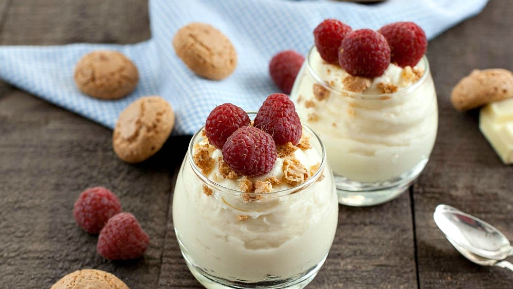
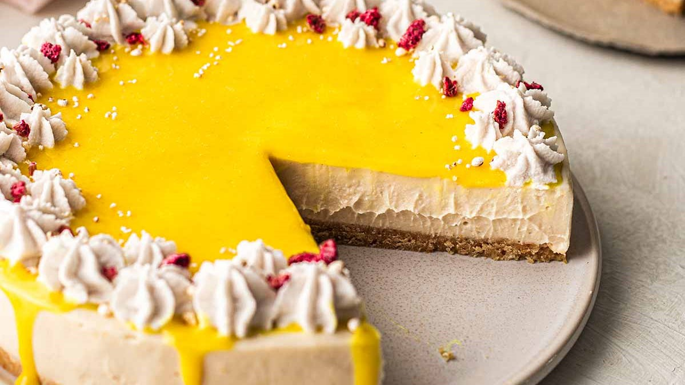
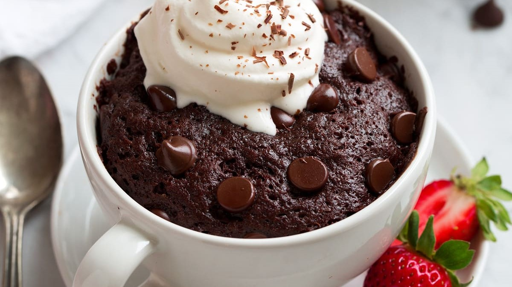
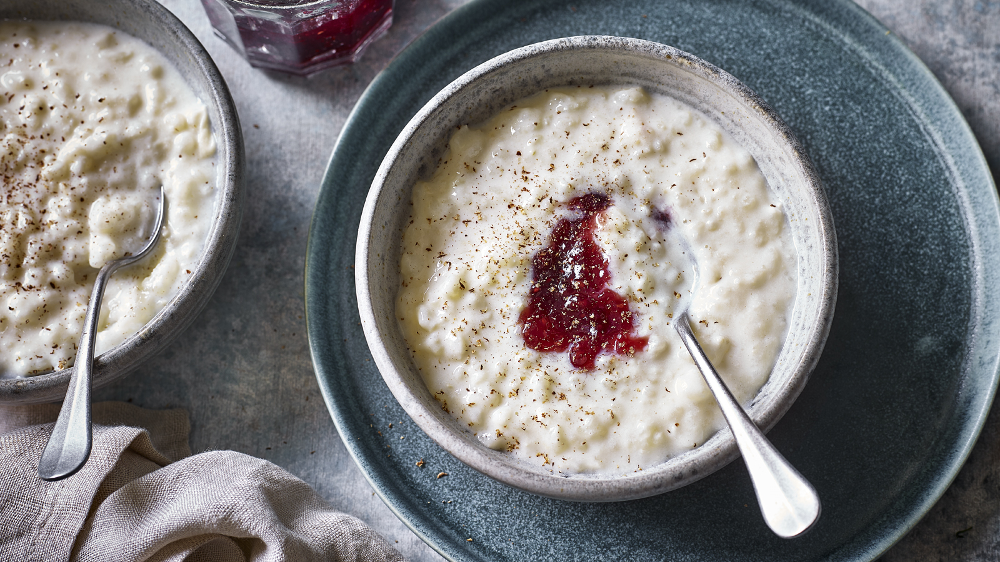

Mascarpone dessert

Ingredients
- 1kg apricot
- 1 large orange
- 85g golden caster sugar
- 2 x 250g tubs mascarpone
- 500g tub vanilla custard
- 140g amaretti biscuit
- about 50g/2oz grated dark chocolate
Steps
- Heat oven to 220C/fan 200C/gas 7. Tip the apricots into a roasting tin, toss with the orange zest, juice and sugar and roast for 15-20 mins until soft. Remove the skins if you like. Tip into a bowl to cool.
- Whisk the mascarpone and custard together until completely blended.
- Tip the biscuits into a large glass bowl, then top with the apricots and custard. Scatter generously with the grated chocolate, then cover and chill until ready to serve.
Lemon cheesecake

Ingredients
- 110g digestive biscuits
- 50g butter
- 25g light brown soft sugar
- 350g mascarpone
- 75g caster sugar
- 1 lemon
- 2-3 lemons
- juiced (about 90ml)
Steps
- Crush the digestive biscuits in a food bag with a rolling pin or in the food processor. Melt the butter in a saucepan, take off heat and stir in the brown sugar and biscuit crumbs.
- Line the base of a 20cm loose bottomed cake tin with baking parchment. Press the biscuit into the bottom of the tin and chill in the fridge while making the topping.
- Beat together the mascarpone, caster sugar, lemon zest and juice, until smooth and creamy. Spread over the base and chill for a couple of hours.
Microwave mug cake

Ingredients
- 4 tbsp self-raising flour
- 4 tbsp caster sugar
- 2 tbsp cocoa powder
- 1 medium egg
- 3 tbsp milk
- tbsp vegetable oil
- a few drops of vanilla essence
- 2 tbsp chocolate chips
- nuts, or raisins etc (optional)
Steps
- Add 4 tbsp self-raising flour, 4 tbsp caster sugar and 2 tbsp cocoa powder to the largest mug you have (to stop it overflowing in the microwave) and mix.
- Add 1 medium egg and mix in as much as you can, but don't worry if there's still dry mix left.
- Add the 3 tbsp milk, 3 tbsp vegetable or sunflower oil and a few drops of vanilla essence and mix until smooth, before adding 2 tbsp chocolate chips, nuts, or raisins, if using, and mix again.
- Centre your mug in the middle of the microwave oven and cook on High for 1½ -2 mins, or until it has stopped rising and is firm to the touch.
Rice pudding

Ingredients
- 100g pudding rice
- 50g butter
- for the dish
- 50g sugar
- 700ml semi-skimmed milk
- pinch of grated nutmeg
- 1 bay leaf
Steps
- Heat the oven to 150C/130C fan/gas 2. Wash and drain the rice. Butter a 850ml baking dish, then tip in the rice and sugar and stir through the milk. Sprinkle in the nutmeg and top with the bay leaf or lemon zest.
- Cook for 2 hrs or until the pudding wobbles ever so slightly when shaken.